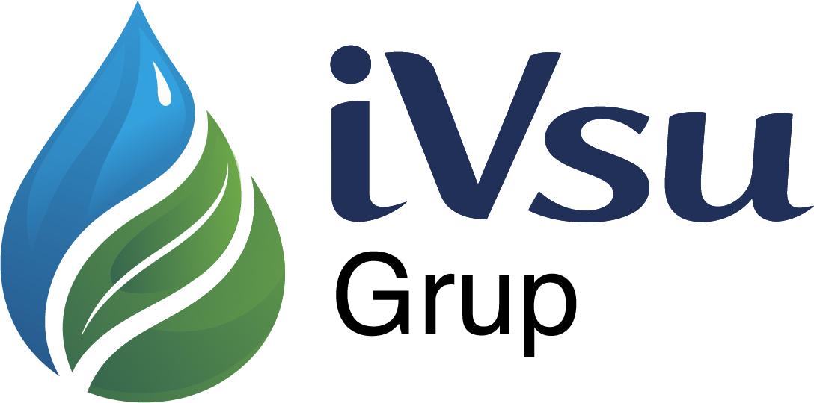

Su Arıtma
Su arıtma teklifi alırken sorulacak sorular
Cihaz fiyatını karşılaştırırken kurulum, uygun kartuş ve bakım kapsamını aynı çerçevede değerlendirin.
Yazıyı oku
Sezon sonunda cihaz modeli, bakım tarihi ve kapatma talimatını kayda geçirmek bir sonraki açılışı kolaylaştırır.

Davutlar’daki yazlığınızda arıtma sistemini aylarca kullanmayacaksanız ilk iş cihazın tam modelini bulun. Aynı markanın farklı cihazlarında uzun süreli bekletme talimatları değişebilir. Kılavuzun ilgili bölümünü saklayın ve önerilen kapatma adımlarını sırayla uygulayın. Tankı boşaltma, elektrik veya su girişini kapatma gibi işlemleri modelin talimatından öğrenin.
Bir site ya da apartman deposu kullanılıyorsa yönetimin sezon kapanışı uygulamasını sorun. Daire içindeki arıtma cihazı ile ortak depo için bakım sorumluları farklı olabilir. Dairenin giriş vanasını kapatmanızın ortak tesisata etkisini varsaymadan kontrol edin. Dolap altında nem veya bağlantı sorunu varsa kapanıştan önce kayda geçirin.
Son bakım tarihi, değişen kartuşlar ve henüz yapılmamış işlemleri yazın. Kılavuzdaki yeniden devreye alma bölümüne nereden ulaşılacağını ekleyin. Bir sonraki sezon evi başka bir aile üyesi açacaksa kaydı görünür bir yerde saklayın. Eski filtre paketinin fotoğrafı, doğru parça kodunu bulmayı kolaylaştırır.
İVSU Blog
Su Arıtma
Cihaz fiyatını karşılaştırırken kurulum, uygun kartuş ve bakım kapsamını aynı çerçevede değerlendirin.
Yazıyı oku
Su Arıtma
Model, parça kodu ve işlem tarihini birlikte saklayarak sonraki bakımlar için kullanılabilir bir kayıt oluşturun.
Yazıyı oku
Su Arıtma
Ayrı bir arıtma musluğu planlarken tezgâh malzemesini, dolap altını ve musluk hareketini birlikte inceleyin.
Yazıyı oku